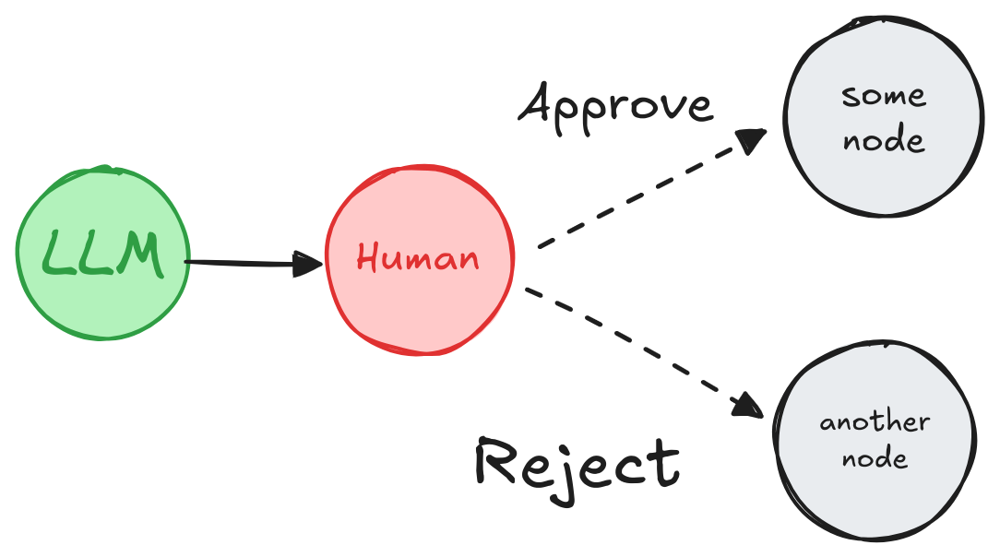

添加人工干预¶
interrupt¶
LangGraph 中的 interrupt 函数 通过在特定节点暂停图表，向人类呈现信息，并根据其输入恢复图表，从而实现人工干预工作流。这对于审批、编辑或收集额外上下文等任务非常有用。
图表使用提供人类响应的 Command 对象恢复。
from langgraph.types import interrupt, Command
def human_node(state: State):
value = interrupt( # (1)!
{
"text_to_revise": state["some_text"] # (2)!
}
)
return {
"some_text": value # (3)!
}
graph = graph_builder.compile(checkpointer=checkpointer) # (4)!
# Run the graph until the interrupt is hit.
config = {"configurable": {"thread_id": "some_id"}}
result = graph.invoke({"some_text": "original text"}, config=config) # (5)!
print(result['__interrupt__']) # (6)!
# > [
# > Interrupt(
# > value={'text_to_revise': 'original text'},
# > resumable=True,
# > ns=['human_node:6ce9e64f-edef-fe5d-f7dc-511fa9526960']
# > )
# > ]
print(graph.invoke(Command(resume="Edited text"), config=config)) # (7)!
# > {'some_text': 'Edited text'}
interrupt(...)在human_node暂停执行，将给定负载呈现给人类。- 任何 JSON 可序列化值都可以传递给
interrupt函数。这里是一个包含要修改文本的字典。 - 恢复后，
interrupt(...)的返回值是人类提供的输入，用于更新状态。 - 需要一个检查点来持久化图表状态。在生产环境中，这应该是持久的（例如，由数据库支持）。
- 图表以一些初始状态调用。
- 当图表遇到中断时，它会返回一个带有负载和元数据的
Interrupt对象。 - 图表通过
Command(resume=...)恢复，注入人类输入并继续执行。
扩展示例：使用 interrupt
from typing import TypedDict
import uuid
from langgraph.checkpoint.memory import InMemorySaver
from langgraph.constants import START
from langgraph.graph import StateGraph
from langgraph.types import interrupt, Command
class State(TypedDict):
some_text: str
def human_node(state: State):
value = interrupt( # (1)!
{
"text_to_revise": state["some_text"] # (2)!
}
)
return {
"some_text": value # (3)!
}
# Build the graph
graph_builder = StateGraph(State)
graph_builder.add_node("human_node", human_node)
graph_builder.add_edge(START, "human_node")
checkpointer = InMemorySaver() # (4)!
graph = graph_builder.compile(checkpointer=checkpointer)
# Pass a thread ID to the graph to run it.
config = {"configurable": {"thread_id": uuid.uuid4()}}
# Run the graph until the interrupt is hit.
result = graph.invoke({"some_text": "original text"}, config=config) # (5)!
print(result['__interrupt__']) # (6)!
# > [
# > Interrupt(
# > value={'text_to_revise': 'original text'},
# > resumable=True,
# > ns=['human_node:6ce9e64f-edef-fe5d-f7dc-511fa9526960']
# > )
# > ]
print(graph.invoke(Command(resume="Edited text"), config=config)) # (7)!
# > {'some_text': 'Edited text'}
interrupt(...)在human_node暂停执行，将给定负载呈现给人类。- 任何 JSON 可序列化值都可以传递给
interrupt函数。这里是一个包含要修改文本的字典。 - 恢复后，
interrupt(...)的返回值是人类提供的输入，用于更新状态。 - 需要一个检查点来持久化图表状态。在生产环境中，这应该是持久的（例如，由数据库支持）。
- 图表以一些初始状态调用。
- 当图表遇到中断时，它会返回一个带有负载和元数据的
Interrupt对象。 - 图表通过
Command(resume=...)恢复，注入人类输入并继续执行。
0.4.0 版本新增
__interrupt__ 是一个特殊键，当图表被中断时，在运行图表时将返回此键。在 0.4.0 版本中，invoke 和 ainvoke 中已添加了对 __interrupt__ 的支持。如果您使用的是旧版本，则只有在使用 stream 或 astream 时才能在结果中看到 __interrupt__。您还可以使用 graph.get_state(thread_id) 获取中断值。
警告
中断功能强大且符合人体工程学。然而，尽管它们在开发人员体验方面可能与 Python 的 input() 函数类似，但需要注意的是，它们不会自动从中断点恢复执行。相反，它们会重新运行使用中断的整个节点。因此，中断通常最好放置在节点的开头或专用节点中。请阅读从中断中恢复部分以获取更多详细信息。
要求¶
要在图表中使用 interrupt，您需要
- 指定一个检查点 以在每一步之后保存图表状态。
- 在适当的位置调用
interrupt()。请参阅设计模式部分以获取示例。 - 使用 线程 ID 运行图表 直到命中
interrupt。 - 使用
invoke/ainvoke/stream/astream恢复执行（请参阅Command原语）。
设计模式¶
人工干预工作流通常有三种不同的操作
- 批准或拒绝：在关键步骤（例如 API 调用）之前暂停图表，以审查和批准操作。如果操作被拒绝，您可以阻止图表执行该步骤，并可能采取替代操作。此模式通常涉及根据人类的输入对图表进行路由。
- 编辑图表状态：暂停图表以审查和编辑图表状态。这对于纠正错误或使用附加信息更新状态非常有用。此模式通常涉及使用人类的输入更新状态。
- 获取输入：在图表中的特定步骤显式请求人工输入。这对于收集附加信息或上下文以指导代理的决策过程非常有用。
下面我们展示了可以使用这些操作实现的不同设计模式。
批准或拒绝¶

在关键步骤（例如 API 调用）之前暂停图表，以审查和批准操作。如果操作被拒绝，您可以阻止图表执行该步骤，并可能采取替代操作。
from typing import Literal
from langgraph.types import interrupt, Command
def human_approval(state: State) -> Command[Literal["some_node", "another_node"]]:
is_approved = interrupt(
{
"question": "Is this correct?",
# Surface the output that should be
# reviewed and approved by the human.
"llm_output": state["llm_output"]
}
)
if is_approved:
return Command(goto="some_node")
else:
return Command(goto="another_node")
# Add the node to the graph in an appropriate location
# and connect it to the relevant nodes.
graph_builder.add_node("human_approval", human_approval)
graph = graph_builder.compile(checkpointer=checkpointer)
# After running the graph and hitting the interrupt, the graph will pause.
# Resume it with either an approval or rejection.
thread_config = {"configurable": {"thread_id": "some_id"}}
graph.invoke(Command(resume=True), config=thread_config)
扩展示例：使用中断批准或拒绝
from typing import Literal, TypedDict
import uuid
from langgraph.constants import START, END
from langgraph.graph import StateGraph
from langgraph.types import interrupt, Command
from langgraph.checkpoint.memory import MemorySaver
# Define the shared graph state
class State(TypedDict):
llm_output: str
decision: str
# Simulate an LLM output node
def generate_llm_output(state: State) -> State:
return {"llm_output": "This is the generated output."}
# Human approval node
def human_approval(state: State) -> Command[Literal["approved_path", "rejected_path"]]:
decision = interrupt({
"question": "Do you approve the following output?",
"llm_output": state["llm_output"]
})
if decision == "approve":
return Command(goto="approved_path", update={"decision": "approved"})
else:
return Command(goto="rejected_path", update={"decision": "rejected"})
# Next steps after approval
def approved_node(state: State) -> State:
print("✅ Approved path taken.")
return state
# Alternative path after rejection
def rejected_node(state: State) -> State:
print("❌ Rejected path taken.")
return state
# Build the graph
builder = StateGraph(State)
builder.add_node("generate_llm_output", generate_llm_output)
builder.add_node("human_approval", human_approval)
builder.add_node("approved_path", approved_node)
builder.add_node("rejected_path", rejected_node)
builder.set_entry_point("generate_llm_output")
builder.add_edge("generate_llm_output", "human_approval")
builder.add_edge("approved_path", END)
builder.add_edge("rejected_path", END)
checkpointer = MemorySaver()
graph = builder.compile(checkpointer=checkpointer)
# Run until interrupt
config = {"configurable": {"thread_id": uuid.uuid4()}}
result = graph.invoke({}, config=config)
print(result["__interrupt__"])
# Output:
# Interrupt(value={'question': 'Do you approve the following output?', 'llm_output': 'This is the generated output.'}, ...)
# Simulate resuming with human input
# To test rejection, replace resume="approve" with resume="reject"
final_result = graph.invoke(Command(resume="approve"), config=config)
print(final_result)
有关更详细的示例，请参见如何审查工具调用。
审查和编辑状态¶

API 参考： interrupt
from langgraph.types import interrupt
def human_editing(state: State):
...
result = interrupt(
# Interrupt information to surface to the client.
# Can be any JSON serializable value.
{
"task": "Review the output from the LLM and make any necessary edits.",
"llm_generated_summary": state["llm_generated_summary"]
}
)
# Update the state with the edited text
return {
"llm_generated_summary": result["edited_text"]
}
# Add the node to the graph in an appropriate location
# and connect it to the relevant nodes.
graph_builder.add_node("human_editing", human_editing)
graph = graph_builder.compile(checkpointer=checkpointer)
...
# After running the graph and hitting the interrupt, the graph will pause.
# Resume it with the edited text.
thread_config = {"configurable": {"thread_id": "some_id"}}
graph.invoke(
Command(resume={"edited_text": "The edited text"}),
config=thread_config
)
扩展示例：使用中断编辑状态
from typing import TypedDict
import uuid
from langgraph.constants import START, END
from langgraph.graph import StateGraph
from langgraph.types import interrupt, Command
from langgraph.checkpoint.memory import MemorySaver
# Define the graph state
class State(TypedDict):
summary: str
# Simulate an LLM summary generation
def generate_summary(state: State) -> State:
return {
"summary": "The cat sat on the mat and looked at the stars."
}
# Human editing node
def human_review_edit(state: State) -> State:
result = interrupt({
"task": "Please review and edit the generated summary if necessary.",
"generated_summary": state["summary"]
})
return {
"summary": result["edited_summary"]
}
# Simulate downstream use of the edited summary
def downstream_use(state: State) -> State:
print(f"✅ Using edited summary: {state['summary']}")
return state
# Build the graph
builder = StateGraph(State)
builder.add_node("generate_summary", generate_summary)
builder.add_node("human_review_edit", human_review_edit)
builder.add_node("downstream_use", downstream_use)
builder.set_entry_point("generate_summary")
builder.add_edge("generate_summary", "human_review_edit")
builder.add_edge("human_review_edit", "downstream_use")
builder.add_edge("downstream_use", END)
# Set up in-memory checkpointing for interrupt support
checkpointer = MemorySaver()
graph = builder.compile(checkpointer=checkpointer)
# Invoke the graph until it hits the interrupt
config = {"configurable": {"thread_id": uuid.uuid4()}}
result = graph.invoke({}, config=config)
# Output interrupt payload
print(result["__interrupt__"])
# Example output:
# Interrupt(
# value={
# 'task': 'Please review and edit the generated summary if necessary.',
# 'generated_summary': 'The cat sat on the mat and looked at the stars.'
# },
# resumable=True,
# ...
# )
# Resume the graph with human-edited input
edited_summary = "The cat lay on the rug, gazing peacefully at the night sky."
resumed_result = graph.invoke(
Command(resume={"edited_summary": edited_summary}),
config=config
)
print(resumed_result)
审查工具调用¶

def human_review_node(state) -> Command[Literal["call_llm", "run_tool"]]:
# This is the value we'll be providing via Command(resume=<human_review>)
human_review = interrupt(
{
"question": "Is this correct?",
# Surface tool calls for review
"tool_call": tool_call
}
)
review_action, review_data = human_review
# Approve the tool call and continue
if review_action == "continue":
return Command(goto="run_tool")
# Modify the tool call manually and then continue
elif review_action == "update":
...
updated_msg = get_updated_msg(review_data)
# Remember that to modify an existing message you will need
# to pass the message with a matching ID.
return Command(goto="run_tool", update={"messages": [updated_message]})
# Give natural language feedback, and then pass that back to the agent
elif review_action == "feedback":
...
feedback_msg = get_feedback_msg(review_data)
return Command(goto="call_llm", update={"messages": [feedback_msg]})
有关更详细的示例，请参见如何审查工具调用。
验证人工输入¶
如果您需要在图表本身（而不是在客户端）验证人类提供的输入，可以通过在单个节点内使用多个中断调用来实现。
API 参考： interrupt
from langgraph.types import interrupt
def human_node(state: State):
"""Human node with validation."""
question = "What is your age?"
while True:
answer = interrupt(question)
# Validate answer, if the answer isn't valid ask for input again.
if not isinstance(answer, int) or answer < 0:
question = f"'{answer} is not a valid age. What is your age?"
answer = None
continue
else:
# If the answer is valid, we can proceed.
break
print(f"The human in the loop is {answer} years old.")
return {
"age": answer
}
扩展示例：验证用户输入
from typing import TypedDict
import uuid
from langgraph.constants import START, END
from langgraph.graph import StateGraph
from langgraph.types import interrupt, Command
from langgraph.checkpoint.memory import MemorySaver
# Define graph state
class State(TypedDict):
age: int
# Node that asks for human input and validates it
def get_valid_age(state: State) -> State:
prompt = "Please enter your age (must be a non-negative integer)."
while True:
user_input = interrupt(prompt)
# Validate the input
try:
age = int(user_input)
if age < 0:
raise ValueError("Age must be non-negative.")
break # Valid input received
except (ValueError, TypeError):
prompt = f"'{user_input}' is not valid. Please enter a non-negative integer for age."
return {"age": age}
# Node that uses the valid input
def report_age(state: State) -> State:
print(f"✅ Human is {state['age']} years old.")
return state
# Build the graph
builder = StateGraph(State)
builder.add_node("get_valid_age", get_valid_age)
builder.add_node("report_age", report_age)
builder.set_entry_point("get_valid_age")
builder.add_edge("get_valid_age", "report_age")
builder.add_edge("report_age", END)
# Create the graph with a memory checkpointer
checkpointer = MemorySaver()
graph = builder.compile(checkpointer=checkpointer)
# Run the graph until the first interrupt
config = {"configurable": {"thread_id": uuid.uuid4()}}
result = graph.invoke({}, config=config)
print(result["__interrupt__"]) # First prompt: "Please enter your age..."
# Simulate an invalid input (e.g., string instead of integer)
result = graph.invoke(Command(resume="not a number"), config=config)
print(result["__interrupt__"]) # Follow-up prompt with validation message
# Simulate a second invalid input (e.g., negative number)
result = graph.invoke(Command(resume="-10"), config=config)
print(result["__interrupt__"]) # Another retry
# Provide valid input
final_result = graph.invoke(Command(resume="25"), config=config)
print(final_result) # Should include the valid age
使用 Command 原语恢复¶
当在图表中使用 interrupt 函数时，执行会在该点暂停并等待用户输入。
要恢复执行，请使用 Command 原语，可以通过 invoke、ainvoke、stream 或 astream 方法提供。
向 interrupt 提供响应： 要继续执行，请使用 Command(resume=value) 传递用户输入。图表从最初调用 interrupt(...) 的节点开头恢复执行。此时，interrupt 函数将返回 Command(resume=value) 中提供的值，而不会再次暂停。
# Resume graph execution by providing the user's input.
graph.invoke(Command(resume={"age": "25"}), thread_config)
中断后如何恢复？¶
警告
从 interrupt 恢复与 Python 的 input() 函数不同，后者从 input() 函数被调用的确切点恢复执行。
使用 interrupt 的一个关键方面是理解恢复是如何工作的。当您在 interrupt 之后恢复执行时，图表执行将从触发最后一个 interrupt 的图表节点的开头开始。
从节点开头到 interrupt 的所有代码都将重新执行。
counter = 0
def node(state: State):
# All the code from the beginning of the node to the interrupt will be re-executed
# when the graph resumes.
global counter
counter += 1
print(f"> Entered the node: {counter} # of times")
# Pause the graph and wait for user input.
answer = interrupt()
print("The value of counter is:", counter)
...
恢复图表后，计数器将第二次递增，产生以下输出
一次调用恢复多个中断¶
如果任务队列中有多个中断，您可以使用带有中断 ID 到恢复值映射字典的 Command.resume，通过一次 invoke / stream 调用恢复多个中断。
例如，一旦您的图表被中断（理论上多次）并停滞
resume_map = {
i.interrupt_id: f"human input for prompt {i.value}"
for i in parent.get_state(thread_config).interrupts
}
parent_graph.invoke(Command(resume=resume_map), config=thread_config)
常见陷阱¶
副作用¶
将具有副作用的代码（例如 API 调用）放置在 interrupt 之后，以避免重复，因为每次恢复节点时都会重新触发这些副作用。
当节点从 interrupt 恢复时，此代码将再次重新执行 API 调用。
如果 API 调用不是幂等的或只是昂贵的，这可能会导致问题。
作为函数调用的子图¶
当作为函数调用子图时，父图将从调用子图的节点开头（以及触发 interrupt 的位置）恢复执行。类似地，子图将从调用 interrupt() 函数的节点开头恢复。
例如，
def node_in_parent_graph(state: State):
some_code() # <-- This will re-execute when the subgraph is resumed.
# Invoke a subgraph as a function.
# The subgraph contains an `interrupt` call.
subgraph_result = subgraph.invoke(some_input)
...
扩展示例：父图和子图执行流程
假设我们有一个包含 3 个节点的父图
父图：node_1 → node_2（子图调用） → node_3
子图包含 3 个节点，其中第二个节点包含一个 interrupt
子图：sub_node_1 → sub_node_2（interrupt） → sub_node_3
恢复图表时，执行将按以下方式进行
- 跳过父图中的
node_1（已执行，图表状态已保存到快照中）。 - 从头开始重新执行父图中的
node_2。 - 跳过子图中的
sub_node_1（已执行，图表状态已保存到快照中）。 - 从头开始重新执行子图中的
sub_node_2。 - 继续执行
sub_node_3和后续节点。
这是一个缩写示例代码，您可以使用它来了解子图如何与中断一起工作。它计算每个节点被进入的次数并打印计数。
import uuid
from typing import TypedDict
from langgraph.graph import StateGraph
from langgraph.constants import START
from langgraph.types import interrupt, Command
from langgraph.checkpoint.memory import MemorySaver
class State(TypedDict):
"""The graph state."""
state_counter: int
counter_node_in_subgraph = 0
def node_in_subgraph(state: State):
"""A node in the sub-graph."""
global counter_node_in_subgraph
counter_node_in_subgraph += 1 # This code will **NOT** run again!
print(f"Entered `node_in_subgraph` a total of {counter_node_in_subgraph} times")
counter_human_node = 0
def human_node(state: State):
global counter_human_node
counter_human_node += 1 # This code will run again!
print(f"Entered human_node in sub-graph a total of {counter_human_node} times")
answer = interrupt("what is your name?")
print(f"Got an answer of {answer}")
checkpointer = MemorySaver()
subgraph_builder = StateGraph(State)
subgraph_builder.add_node("some_node", node_in_subgraph)
subgraph_builder.add_node("human_node", human_node)
subgraph_builder.add_edge(START, "some_node")
subgraph_builder.add_edge("some_node", "human_node")
subgraph = subgraph_builder.compile(checkpointer=checkpointer)
counter_parent_node = 0
def parent_node(state: State):
"""This parent node will invoke the subgraph."""
global counter_parent_node
counter_parent_node += 1 # This code will run again on resuming!
print(f"Entered `parent_node` a total of {counter_parent_node} times")
# Please note that we're intentionally incrementing the state counter
# in the graph state as well to demonstrate that the subgraph update
# of the same key will not conflict with the parent graph (until
subgraph_state = subgraph.invoke(state)
return subgraph_state
builder = StateGraph(State)
builder.add_node("parent_node", parent_node)
builder.add_edge(START, "parent_node")
# A checkpointer must be enabled for interrupts to work!
checkpointer = MemorySaver()
graph = builder.compile(checkpointer=checkpointer)
config = {
"configurable": {
"thread_id": uuid.uuid4(),
}
}
for chunk in graph.stream({"state_counter": 1}, config):
print(chunk)
print('--- Resuming ---')
for chunk in graph.stream(Command(resume="35"), config):
print(chunk)
这将打印出
Entered `parent_node` a total of 1 times
Entered `node_in_subgraph` a total of 1 times
Entered human_node in sub-graph a total of 1 times
{'__interrupt__': (Interrupt(value='what is your name?', resumable=True, ns=['parent_node:4c3a0248-21f0-1287-eacf-3002bc304db4', 'human_node:2fe86d52-6f70-2a3f-6b2f-b1eededd6348'], when='during'),)}
--- Resuming ---
Entered `parent_node` a total of 2 times
Entered human_node in sub-graph a total of 2 times
Got an answer of 35
{'parent_node': {'state_counter': 1}}
使用多个中断¶
在单个节点中使用多个中断对于验证人工输入等模式可能很有帮助。但是，如果在同一节点中使用多个中断，如果不仔细处理，可能会导致意外行为。
当一个节点包含多个中断调用时，LangGraph 会维护一个与执行该节点的任务相关的恢复值列表。每当执行恢复时，它会从节点开头开始。对于遇到的每个中断，LangGraph 会检查任务的恢复列表中是否存在匹配的值。匹配是严格基于索引的，因此节点内中断调用的顺序至关重要。
为避免问题，请避免在执行之间动态更改节点结构。这包括添加、删除或重新排序中断调用，因为此类更改可能导致索引不匹配。这些问题通常源于非常规模式，例如通过 Command(resume=..., update=SOME_STATE_MUTATION) 修改状态或依赖全局变量动态修改节点结构。
扩展示例：引入非确定性的错误代码
import uuid
from typing import TypedDict, Optional
from langgraph.graph import StateGraph
from langgraph.constants import START
from langgraph.types import interrupt, Command
from langgraph.checkpoint.memory import MemorySaver
class State(TypedDict):
"""The graph state."""
age: Optional[str]
name: Optional[str]
def human_node(state: State):
if not state.get('name'):
name = interrupt("what is your name?")
else:
name = "N/A"
if not state.get('age'):
age = interrupt("what is your age?")
else:
age = "N/A"
print(f"Name: {name}. Age: {age}")
return {
"age": age,
"name": name,
}
builder = StateGraph(State)
builder.add_node("human_node", human_node)
builder.add_edge(START, "human_node")
# A checkpointer must be enabled for interrupts to work!
checkpointer = MemorySaver()
graph = builder.compile(checkpointer=checkpointer)
config = {
"configurable": {
"thread_id": uuid.uuid4(),
}
}
for chunk in graph.stream({"age": None, "name": None}, config):
print(chunk)
for chunk in graph.stream(Command(resume="John", update={"name": "foo"}), config):
print(chunk)